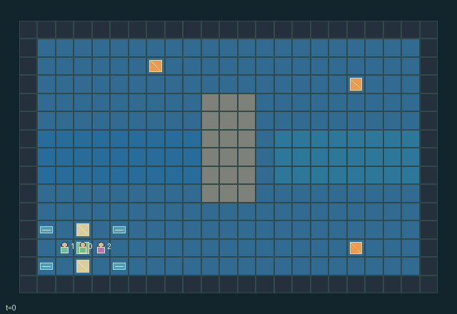

GI076 · Ballast Run — The Drifting Sample Skiff

A three-person crew must collect three fragile survey capsules from marked river buoys and bank them at its home berth. The skiff retains velocity until counter-thrust or braking changes it. Walking crew, filled corner tanks and loaded capsules change its balance; loose capsules slide toward the low edge and can be lost. Two reusable clips can secure capsules, while cliffs, reef collision and severe imbalance damage the hull.
Identity and original contract
3 independently actionable roles; 14 discrete commands per role; 1939 native observation columns per role; original horizon 192 steps. Declared per-step reward range: -2 to 6. Observation regime: fully_observable.
Source SHA-256: 3aefd945deb38d64614ec4dfaf55ddc131d192b81e6b155f2814bb88f56d37ea
The objective, rewards, population, map and horizon remain original. A preview is not a success claim.
Objective and gameplay
A three-person crew must collect three fragile survey capsules from marked river buoys and bank them at its home berth. The skiff retains velocity until counter-thrust or braking changes it. Walking crew, filled corner tanks and loaded capsules change its balance; loose capsules slide toward the low edge and can be lost. Two reusable clips can secure capsules, while cliffs, reef collision and severe imbalance damage the hull.
A crew member walks to the upper scoop, moving mass upward; a colleague shifts ballast downward before a capsule can satisfy the loading balance check. A loaded capsule changes torque. The clip worker must reach its current deck cell while the helm keeps the boat stationary or navigates safely; securing it prevents gravity motion but preserves its contribution to torque. A helm command changes persistent velocity. Waiting does not stop travel; a later opposite impulse or brake is necessary before stationary sampling or banking. A periodic current impulse can introduce lateral motion. The crew can read tide phase and centre terrain, but the proper correction depends on existing velocity and available fuel. When two clips are occupied, collecting another capsule requires retaining safe balance, releasing a clip or banking earlier. The reward does not directly prescribe one of those strategies. Walking, filling tanks and moving loose capsules alter a shared torque calculation, so independent locally sensible actions can jointly cause an edge loss or structural damage.
- Three crew collect three fragile capsules and bank them at the home berth; this is authored source, not observed successful play.
- The real 5x3 skiff retains velocity. Thrust, braking, currents and full-hull collision determine its actual river position.
- Crew mass, corner-tank water and cargo determine torque. Loose capsules can slide or be lost; two real clips stop slides but retain mass.
- Loading and banking require actual station positions, stopped motion and safe balance. Hull failure and capsule loss take priority over success.
- Show the river board plus deck detail, actual moving crew/cargo, tank fill, clip states and committed effects. A numeric dashboard is supplementary.
- Current arrows are public force previews; rejected collisions and force arrows must not be animated as successful travel.
- Each event is identified by tick and slot. Repeated absorbing snapshots do not replay old effects.
- Natural endings precede H192 truncation. Already-ended raw states remain unchanged and reward zero. Do not label time limit as success.
Ending: Hull exhaustion, then any capsule lost, then all three banked. Otherwise time limit 192. Natural success/failure has priority over horizon.
What this game explores
Resource commons & externalities: An action changes a persistent resource or burden that another role also encounters. Compare extraction with maintenance and record the downstream resource trajectory.
Information, sensing & communication: Who knows a fact, when it was measured, and whether it was communicated are separate state variables. Test memory or communication using only the same role-visible evidence.
Commitment, exchange & governance: Promises consume time, liquidity, access or material. Separate an announced agreement from a binding commitment and from its eventual delivery; log cancellation and expiry too.
Joint transport & shared access: Positions, load geometry, occupancy and persistent access constrain whose action can succeed next. Distinguish physical handoff, shared controls and simultaneous force from a cosmetic cooperation label.
Survival, protection & rescue: Protection and repair alter another role's future feasible actions. Record losses, exposure, rescue and infrastructure as well as delivery; survival is determined by the actual kernel.
These are questions supported by rule structure, not observed learning effects.
Play it: operating walkthrough
crucibles play --game gi076Keep Python running and open its printed address. Select this game, set a seed and press Create session. The game itself is always English.
Assign a role range to Host with Assign / take over, or Assign all roles. Invite a second participant with Create player invitation, then assign a disjoint subset. Every original role is available.
For every owned role choose a legal command and press Queue. Arrow keys / WASD queue a declared directional action for the current role camera when available. Space or Advance one joint step advances everyone together. Non-directional games use the selectors.
Unqueued roles use the labelled untrained uniform-legal policy. Take over or release roles before the next step without resetting. Full-state debug is privileged and permanently logged; role cameras preserve permissions. Close the session to retain logs. Server restart does not restore sessions.
Complete command reference
IDs and English labels exactly match the manifest. Availability depends on role, resources, location and phase. An available action can still have no productive effect.
0·wait
1·walk_north
2·walk_east
3·walk_south
4·walk_west
5·thrust_north
6·thrust_east
7·thrust_south
8·thrust_west
9·brake
10·fill_tank
11·drain_tank
12·work_station
13·toggle_clip
Roles and capability identifiers
These original role names describe capabilities, not interchangeable skins. Check each owned role's legal selector before planning handoffs.
agent_0·crew
agent_1·crew
agent_2·crew
Information and observation permissions
All physical quantities public; only identity one-hot differs by crew. Flat observations have exactly 1939 columns.
The GIF is full-state debug and may reveal hidden entities or private state. Train on obs[agent], not the picture, state tree or another role's private row. Field slices and visibility are in the original manifest.
Reinforcement-learning integration
import jax
from crucibles_jaxmarl import make
env = make("gi076")
key = jax.random.PRNGKey(0)
key, rk, ak, sk = jax.random.split(key, 4)
obs, state = jax.jit(env.reset)(rk)
actions = env.sample_actions(ak, state)
obs, state, rewards, dones, info = jax.jit(env.step_env)(sk, state, actions)
done = dones["__all__"]Observations are float32 vectors of width 1939; actions are scalar int32; masks have 14 entries. Supply all 3 roles each transition. Masked sampling is an engineering reference, not a trained learner.
step_env retains terminal data without reset. step performs outer autoreset and keeps terminal data in info["raw_state"] and info["raw_observation"]. Use dones["__all__"] for episode boundaries; separate completion, failure and time limit in analysis.
JIT or vmap equal identities and shapes. Split independent reset, policy and transition keys. Group different shapes explicitly; do not shrink the population or horizon. Host rendering stays outside training.
Training questions and fair evaluation
Define valid completion from the objective before fitting. Preserve original rewards and also report real deliveries/services, losses, resource state, unresolved episodes and per-role returns. Animation is not a reward signal.
An action changes a persistent resource or burden that another role also encounters. Compare extraction with maintenance and record the downstream resource trajectory.
Who knows a fact, when it was measured, and whether it was communicated are separate state variables. Test memory or communication using only the same role-visible evidence.
Promises consume time, liquidity, access or material. Separate an announced agreement from a binding commitment and from its eventual delivery; log cancellation and expiry too.
Positions, load geometry, occupancy and persistent access constrain whose action can succeed next. Distinguish physical handoff, shared controls and simultaneous force from a cosmetic cooperation label.
Protection and repair alter another role's future feasible actions. Record losses, exposure, rescue and infrastructure as well as delivery; survival is determined by the actual kernel.
Compare memory, communication or centralized critics under matched actor information. Declare critic access; keep actor inputs role-filtered. Match partner/opponent distributions, masks, compute and checkpoint selection. Final tests never enter fitting or selection.
Independent training runs or source-pairing blocks are inferential units; episodes from one policy are not independent training replications. Save hashes, keys, versions, device, time and cost. Negative, zero, failed and indeterminate outcomes are valid. No trained checkpoint or target score is supplied.
Classification and evidence
Overlapping editorial labels are reading aids, not proof of novelty, difficulty, strategic equivalence or learning effects.
- Resource commons & externalities
- Evidence
scene.rules.2: Crew mass, corner-tank water and cargo determine torque. Loose capsules can slide or be lost; two real clips stop slides but retain mass.
- Information, sensing & communication
- Evidence
manifest.task.objective: A three-person crew must collect three fragile survey capsules from marked river buoys and bank them at its home berth. The skiff retains velocity until counter-thrust or braking changes it. Walking crew, filled corner tanks and loaded capsules change its balance; loose capsules slide toward the low edge and can be lost. Two reusable clips can secure capsules, while cliffs, reef collision and severe imbalance damage the hull.
- Evidence
scene.rules.0: Three crew collect three fragile capsules and bank them at the home berth; this is authored source, not observed successful play.
- Commitment, exchange & governance
- Evidence
scene.rules.4: Show the river board plus deck detail, actual moving crew/cargo, tank fill, clip states and committed effects. A numeric dashboard is supplementary.
- Joint transport & shared access
- Evidence
manifest.task.objective: A three-person crew must collect three fragile survey capsules from marked river buoys and bank them at its home berth. The skiff retains velocity until counter-thrust or braking changes it. Walking crew, filled corner tanks and loaded capsules change its balance; loose capsules slide toward the low edge and can be lost. Two reusable clips can secure capsules, while cliffs, reef collision and severe imbalance damage the hull.
- Evidence
scene.rules.1: The real 5x3 skiff retains velocity. Thrust, braking, currents and full-hull collision determine its actual river position.
- Evidence
scene.rules.2: Crew mass, corner-tank water and cargo determine torque. Loose capsules can slide or be lost; two real clips stop slides but retain mass.
- Survival, protection & rescue
- Evidence
manifest.task.objective: A three-person crew must collect three fragile survey capsules from marked river buoys and bank them at its home berth. The skiff retains velocity until counter-thrust or braking changes it. Walking crew, filled corner tanks and loaded capsules change its balance; loose capsules slide toward the low edge and can be lost. Two reusable clips can secure capsules, while cliffs, reef collision and severe imbalance damage the hull.
Source, receipts and preview limits
The world-only English GIF replays saved untrained legal actions through the original kernel. At most 25 actual endpoints include initial and terminal state; no invented interpolation. It is full-state debug, not the role observation.
Original source, observation slices, manifest and mechanism
Native receipt · Presentation receipt
Engineering passes do not establish learning. Nonzero floating differences remain recorded and undetermined; no new tolerance was introduced. Human scores remain unverified.